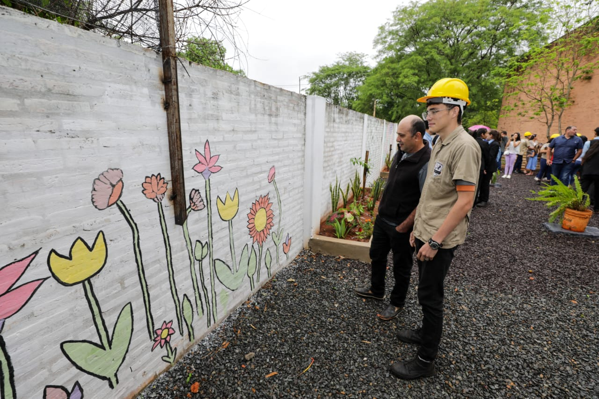
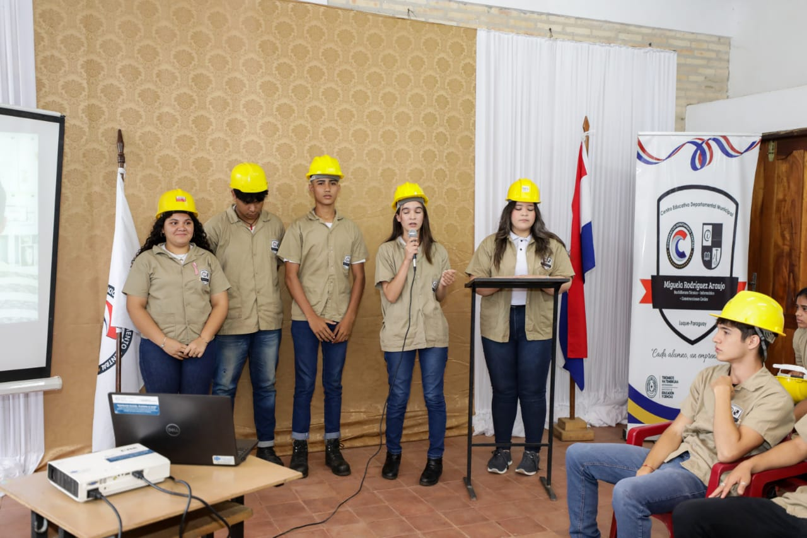
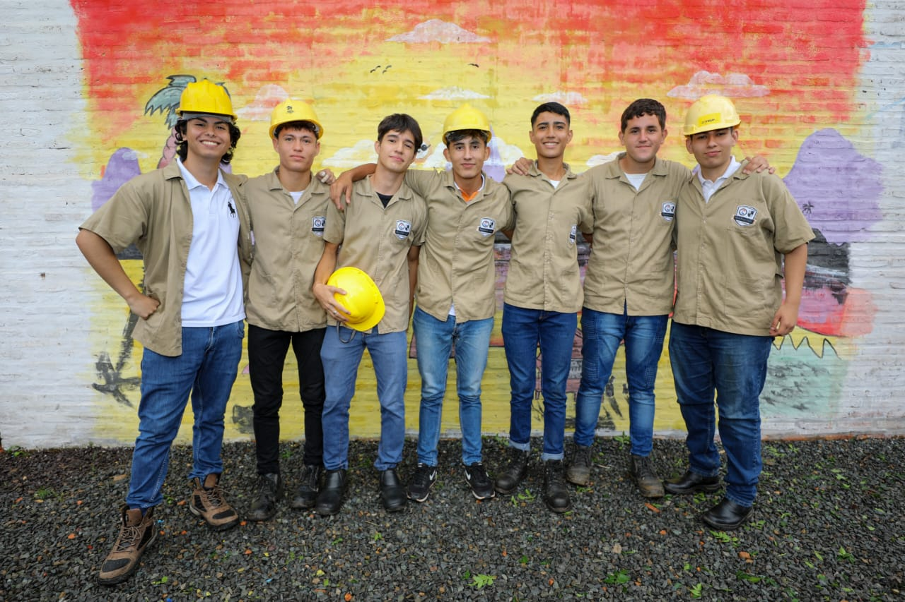
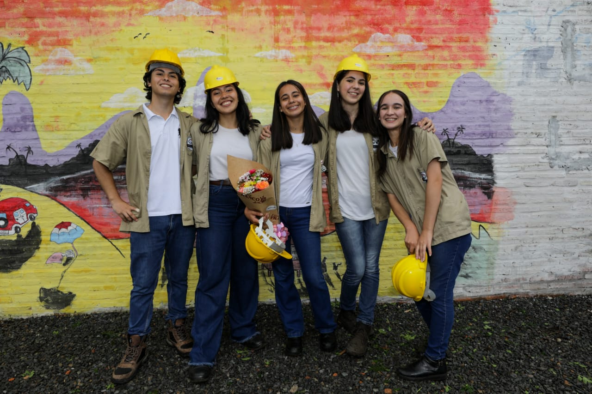
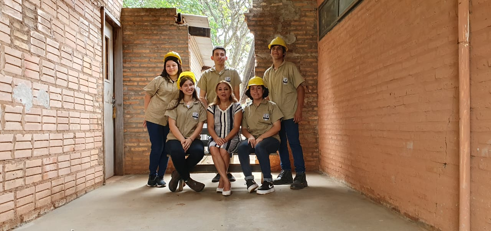

Anexos
- 
- 
- 
- 

- 
Centro Educativo Departamental
Miguela Rodríguez Araujo
El Bachillerato Técnico en Construcciones Civiles ofrece una formación sólida en los principios del diseño, planificación y ejecución de obras civiles.
Los estudiantes adquieren conocimientos teóricos y prácticos en áreas como estructuras, materiales de construcción, dibujo técnico y topografía, preparándolos para participar activamente en proyectos de infraestructura.
El egresado del Bachillerato Técnico en Construcciones Civiles estará capacitado para colaborar en la planificación, ejecución y supervisión de obras de pequeña y mediana envergadura. Podrá desempeñarse como asistente técnico en estudios de arquitectura o ingeniería, constructoras, empresas de mantenimiento edilicio, y organismos públicos vinculados a la infraestructura. También estará preparado para continuar estudios superiores en arquitectura, ingeniería civil u otras carreras afines.